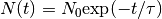

CalMuonDeadTime dialog.
Table of Contents
| Name | Direction | Type | Default | Description |
|---|---|---|---|---|
| InputWorkspace | Input | MatrixWorkspace | Mandatory | Name of the input workspace |
| DeadTimeTable | Output | TableWorkspace | Mandatory | The name of the TableWorkspace in which to store the list of deadtimes for each spectrum |
| FirstGoodData | Input | number | 0.5 | The first good data point in units of micro-seconds as measured from time zero (default to 0.5) |
| LastGoodData | Input | number | 5 | The last good data point in units of micro-seconds as measured from time zero (default to 5.0) |
| DataFitted | Output | Workspace | Mandatory | The data which the deadtime equation is fitted to |
Calculate muon deadtime for each spectra in a workspace, by fitting the DataFitted to the function detailed below between the times FirstGoodData and LastGoodData. Using the equation from ApplyDeadTimeCorr v1 and  results in;

where,
 = true count (unused) as a function of time
= true count (unused) as a function of time 
 = true count at time zero
= true count at time zero = measured count
= measured count = deadtime (fitted)
= deadtime (fitted) = time bin width
= time bin width = Muon lifetime
= Muon lifetime = Number of good frames
= Number of good framesThen,  is found by fitting to the straight line
is found by fitting to the straight line  vs
vs
 , with intercept and slope
, with intercept and slope  .
.
The number of good frames is obtained from the sample log goodfrm in the input workspace.
This log must be present for the algorithm to run successfully.
Note
To run these usage examples please first download the usage data, and add these to your path. In Mantid this is done using Manage User Directories.
Example - Calculating dead times for a file
ws = Load("MUSR00015189")
#CalMuonDeadTime outputs two workspaces so catch them both
(wsOut,wsFitted) = CalMuonDeadTime('ws_1')
print("First five dead times:")
for i in range(5):
print(" Spectrum {} -> {:.4f}".format(wsOut.column(0)[i], wsOut.column(1)[i]))
Output:
First five dead times:
Spectrum 1 -> -0.3135
Spectrum 2 -> -0.2902
Spectrum 3 -> -0.2746
Spectrum 4 -> -0.3151
Spectrum 5 -> -0.5266
Categories: AlgorithmIndex | Muon
C++ header: CalMuonDeadTime.h (last modified: 2020-03-20)
C++ source: CalMuonDeadTime.cpp (last modified: 2020-04-07)